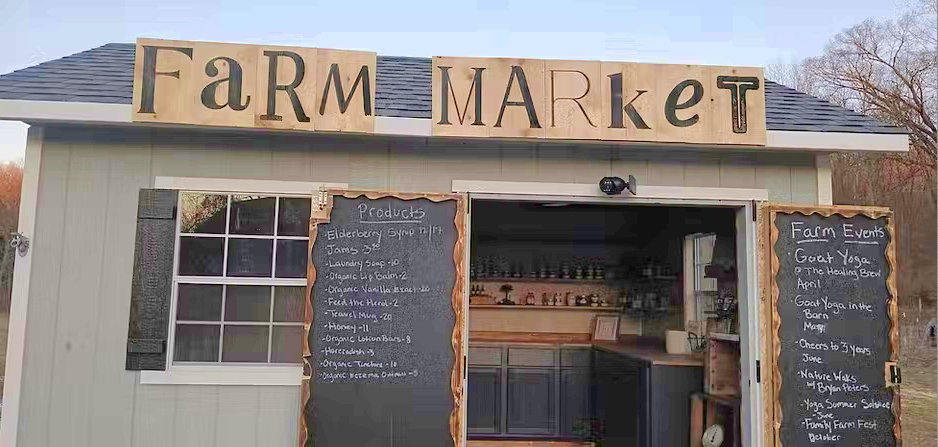
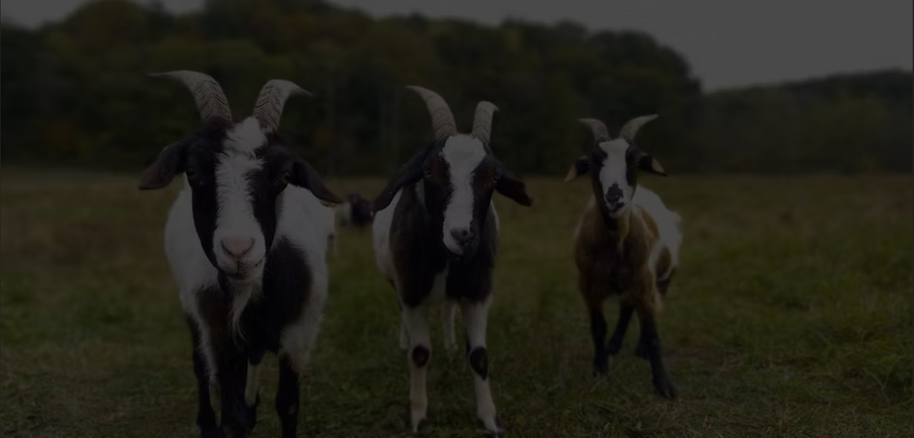
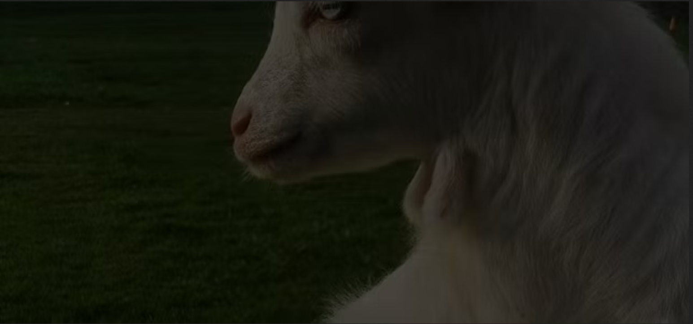

Farm Market
Eggs
Fresh eggs and more—self-pay at the stand.
Biodiverse farming · Est. 2020
Biodiverse farming on 48 acres in the heart of the Cuyahoga National Park. We practice a closed, regenerative system: “healthy ground, healthy grass, healthy animals, healthy people.”

Our Farm Market Is Open Year Round 9am-Dusk
Livestock Sales Are By Appointment
Open 9am-dusk 7 days a week.
Farm Market
Fresh eggs and more—self-pay at the stand.

Farm Market
Seasonal produce, handmade goods, and rotating apothecary batches.

Livestock
Tennessee Fainting Goats raised for vegetation management, breed stock, meat and companion animals.
We practice a closed system and regenerative style of farming. All livestock is pasture grazed using intensive grazing and long rest periods to enhance root growth, stimulate grass, and build top soil. We pride ourselves on humane treatment and enrichment of all animals.
Farm Market
Inside the Farm Market you will find eggs, pork, turkey, seasonal produce, honey, elderberry syrup, artisan jams, tinctures, salves and homemade décor.
We are self-pay, cash or Venmo.

A Look Through Time
"Nathanial Point, Sr. could look north to his fields, east to his barn, south to a steep wooded hillside, and west to the bank of the Cuyahoga River. For almost a century (1857 to 1940), generations of Points lived and worked here. The history of the Point Farm illustrates how, after the Civil War, dairy farming and grain production rose in significance in Northeast Ohio.
Nathanial Point's successful dairy business took advantage of newer forms of transportation, including the canal and railroad, which carried his products to Akron. The Point family also raised other livestock, vegetables, and grains. Beginning with three or four cows, Nathanial built up a prosperous operation that depended on the accessibility of the city, the fertility of his land, and the perseverance of his family.
In 1940, after the death of young Nathanial Point III, the family decided to leave their farm. Daniel Biro, a Hungarian immigrant, later purchased the property. His subsistence farm supported his four children and their families during lean times. They moved a large farmhouse from nearby Quick Road and split it in two, so everyone had a home. The Biros made additional income by selling gravel and topsoil.
During the establishment of Cuyahoga Valley National Park, the National Park Service bought the historic farm. For a time, it was used as office space for the park friends' group. By the end of the 20th century, it was rehabilitated and became a Countryside Initiative farm. The property's agricultural heritage has been restored. New farmers now raise pastured meat goats and heritage breed turkeys."
https://www.nps.gov/cuva/learn/historyculture/point-farm.htm
This may sound odd, however, these goats have actually served an historical purpose. Shepherds often kept the goats in with their flocks as insurance in case a predator would attacks. The theory went something like this- as wolves would come down from the hills to prey on a flock of sheep, the goats would become startled and they would faint. The sheep would run towards safety, while the Tennessee Fainting Goat would not.
They go by many names, Tennessee Fainting Goats/Myotonic Goats/Stiff Leg. They have a calm disposition and make lovely companion pets.

"This innovative program began in 1999 as a way to preserve and protect the rural landscape in Cuyahoga Valley National Park (CVNP). When the National Park Service created the boundaries of this National Recreation Area in the 1970’s, there was a struggle to stop the loss of rural character and cultural resources in the Cuyahoga Valley. After a trip overseas, former park superintendent John Debo wondered why the countryside of Cuyahoga Valley couldn’t be successfully managed like the countryside in Europe – with farming. Much of the public land in Europe is leased to farmers for grazing and crops. In a very cooperative relationship that has been in existence for centuries, the rural landscape of Europe is protected by these land stewards that we call farmers. Debo needed a champion of this plan, so he enlisted Darwin Kelsey to take the charge.
Darwin created the Cuyahoga Valley Countryside Conservancy (now known as Countryside), a private nonprofit organization, to partner with CVNP to accomplish this monumental task. A formal Cooperative Agreement with CVNP was created, whereby Countryside would help CVNP manage the farming program by selecting farm and field sites to be rehabilitated, recruiting potential farmers, providing agricultural expertise to both the park and farmers and finding the resources needed to help both parties succeed. The park’s role would be to invest the resources to bring these old farmsteads back to life, and administer the lease and fiscal management of the program. The third partner in this innovative land use model is the farmer.
The farmer is competitively awarded a long-term lease of a proposed site only after powerfully articulating his or her plan to manage and farm that site through the entire term of the lease. These farms are expected to be managed with only sustainable farming practices, and the farmers are required to positively interact with CVNP visitors. The participation and stewardship of these special farmers are the key to the success of this program. Here is the 2015 Request for Proposals (now closed but for informational purposes) . The 2015 RFP resulted in two farms being leased to new farmers.
To date, there are over a dozen restored farm properties in the program. The farms and Countryside bring over 100,000 people into the park each year and have an economic impact of over a million dollars per year.
This innovative land use program has achieved international attention and is sought as a model for public/private sustainable land use.
We are pleased and proud of the Countryside Initiative’s success and the farmers who live here. Because of this program, the rural character of the Cuyahoga Valley is safe, sound, and growing the next generation of land stewards."
" Closed Loop Agriculture is farming practice that recycles all nutrients and organic matter material back to the soil that it grew in. This forms part of an agricultural practice that preserves the nutrient and carbon levels within the soil and allows farming to be carried out on a sustainable basis."
"Biodiversity is all the different kinds of life you'll find in one area—the variety of animals, plants, fungi, and even microorganisms like bacteria that make up our natural world. Each of these species and organisms work together in ecosystems, like an intricate web, to maintain balance and support life."